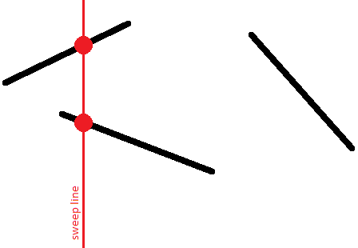

MAXimal
добавлено: 26 Mar 2012 1:00
редактировано: 26 Mar 2012 1:00
Содержание [скрыть]
Поиск пары пересекающихся отрезков алгоритмом заметающей прямой за O (N log N)
Даны  отрезков на плоскости. Требуется проверить, пересекаются ли друг с другом хотя бы два из них. (Если ответ положителен — то вывести эту пару пересекающихся отрезков; среди нескольких ответов достаточно выбрать любой из них.)
отрезков на плоскости. Требуется проверить, пересекаются ли друг с другом хотя бы два из них. (Если ответ положителен — то вывести эту пару пересекающихся отрезков; среди нескольких ответов достаточно выбрать любой из них.)
Наивный алгоритм решения — перебрать за  все пары отрезков и проверить для каждой пары, пересекаются они или нет. В данной статье описывается алгоритм с временем работы
все пары отрезков и проверить для каждой пары, пересекаются они или нет. В данной статье описывается алгоритм с временем работы  , который основан на принципе сканирующей (заметающей) прямой (по-английски: "sweep line").
, который основан на принципе сканирующей (заметающей) прямой (по-английски: "sweep line").
Алгоритм
Проведём мысленно вертикальную прямую и начнём двигать эту прямую вправо. По ходу своего движения эта прямая будет встречаться с отрезками, причём в любой момент времени каждый отрезок будет пересекаться с нашей прямой по одной точке (мы пока будем считать, что вертикальных отрезков нет).

Таким образом, для каждого отрезка в какой-то момент времени его точка появится на сканирующей прямой, затем с движением прямой будет двигаться и эта точка, и, наконец, в какой-то момент отрезок исчезнет с прямой.
Нас интересует относительный порядок отрезков по вертикали. А именно, мы будем хранить список отрезков, пересекающих сканирующую прямую в данный момент времени, где отрезки будут отсортированы по их  -координате на сканирующей прямой.
-координате на сканирующей прямой.

Этот порядок интересен тем, что пересекающиеся отрезки будут иметь одинаковую -координату хотя бы в один момент времени:

Сформулируем ключевые утверждения:
- Для поиска пересекающейся пары достаточно рассматривать при каждом фиксированном положении сканирующей прямой только соседние отрезки.
- Достаточно рассматривать сканирующую прямую не во всех возможных действительных позициях , а только в тех позициях, когда появляются новые отрезки или исчезают старые. Иными словами, достаточно ограничиться лишь только положениями, равными абсциссам точек-концов отрезков.
- При появлении нового отрезка достаточно вставить его в нужное место в список, полученный для предыдущей сканирующей прямой. Проверять на пересечение надо только добавляемый отрезок с его непосредственными соседями в списке сверху и снизу.
- При исчезновении отрезка достаточно удалить его из текущего списка. После этого надо проверить на пересечение с верхним и нижним соседями в списке.
- Других изменений в порядке следования отрезков в списке, кроме описанных, не существует. Других проверок на пересечения производить не надо.
Для понимания истинности этих утверждений достаточно следующих замечаний:
- Два непересекающихся отрезка никогда не меняют своего относительного порядка.
В самом деле, если один отрезок сначала был выше другого, а затем стал ниже, то между двумя этими моментами произошло пересечение этих двух отрезков.
- Иметь совпадающие -координаты два непересекающихся отрезка также не могут.
- Из этого следует, что в момент появления отрезка мы можем найти в очереди позицию для этого отрезка, и больше этот отрезок переставлять в очереди не придётся: его порядок относительно других отрезков в очереди меняться не будет.
- Два пересекающихся отрезка в момент точки своего пересечения окажутся соседями друг друга в очереди.
- Следовательно, для нахождения пары пересекающихся отрезков достаточно проверить на пересечение только все те пары отрезков, которые когда-нибудь за время движения сканирующей прямой хотя бы раз были соседями друг друга.
Легко заметить, что этого достаточно лишь проверять добавляемый отрезок со своими верхним и нижним соседями, а также при удалении отрезка — его верхнего и нижнего соседей (которые после удаления станут соседями друг друга).
- Следует обратить внимание, что при фиксированном положении сканирующей прямой мы сначала должны произвести добавление всех появляющихся здесь отрезков, и лишь затем — удаление всех исчезающих здесь отрезков.
Тем самым, мы не пропустим пересечения отрезков по вершине: т.е. такие случаи, когда два отрезка имеют общую вершину.
- Заметим, что вертикальные отрезки на самом деле никак не влияют на корректность алгоритма.
Эти отрезки выделяются тем, что они появляются и исчезают в один и тот же момент времени. Однако, за счёт предыдущего замечания, мы знаем, что сначала все отрезки будут добавлены в очередь, и лишь затем будут удалены. Следовательно, если вертикальный отрезок пересекается с каким-то другим открытым в этот момент отрезком (в том числе вертикальным), то это будет обнаружено.
В какое место очереди помещать вертикальные отрезки? Ведь вертикальный отрезок не имеет одной определённой
-координаты, он простирается на целый отрезок по -координате. Однако легко понять, что в качестве -координаты можно взять любую координату из этого отрезка.
Таким образом, весь алгоритм совершит не более  тестов на пересечение пары отрезков, и совершит
тестов на пересечение пары отрезков, и совершит  операций с очередью отрезков (по
операций с очередью отрезков (по  операций в моменты появления и исчезновения каждого отрезка).
операций в моменты появления и исчезновения каждого отрезка).
Итоговая асимптотика алгоритма составляет, таким образом, .
Реализация
Приведём полную реализацию описанного алгоритма:
const double EPS = 1E-9; struct pt { double x, y; }; struct seg { pt p, q; int id; double get_y (double x) const { if (abs (p.x - q.x) < EPS) return p.y; return p.y + (q.y - p.y) * (x - p.x) / (q.x - p.x); } }; inline bool intersect1d (double l1, double r1, double l2, double r2) { if (l1 > r1) swap (l1, r1); if (l2 > r2) swap (l2, r2); return max (l1, l2) <= min (r1, r2) + EPS; } inline int vec (const pt & a, const pt & b, const pt & c) { double s = (b.x - a.x) * (c.y - a.y) - (b.y - a.y) * (c.x - a.x); return abs(s)<EPS ? 0 : s>0 ? +1 : -1; } bool intersect (const seg & a, const seg & b) { return intersect1d (a.p.x, a.q.x, b.p.x, b.q.x) && intersect1d (a.p.y, a.q.y, b.p.y, b.q.y) && vec (a.p, a.q, b.p) * vec (a.p, a.q, b.q) <= 0 && vec (b.p, b.q, a.p) * vec (b.p, b.q, a.q) <= 0; } bool operator< (const seg & a, const seg & b) { double x = max (min (a.p.x, a.q.x), min (b.p.x, b.q.x)); return a.get_y(x) < b.get_y(x) - EPS; } struct event { double x; int tp, id; event() { } event (double x, int tp, int id) : x(x), tp(tp), id(id) { } bool operator< (const event & e) const { if (abs (x - e.x) > EPS) return x < e.x; return tp > e.tp; } }; set<seg> s; vector < set<seg>::iterator > where; inline set<seg>::iterator prev (set<seg>::iterator it) { return it == s.begin() ? s.end() : --it; } inline set<seg>::iterator next (set<seg>::iterator it) { return ++it; } pair<int,int> solve (const vector<seg> & a) { int n = (int) a.size(); vector<event> e; for (int i=0; i<n; ++i) { e.push_back (event (min (a[i].p.x, a[i].q.x), +1, i)); e.push_back (event (max (a[i].p.x, a[i].q.x), -1, i)); } sort (e.begin(), e.end()); s.clear(); where.resize (a.size()); for (size_t i=0; i<e.size(); ++i) { int id = e[i].id; if (e[i].tp == +1) { set<seg>::iterator nxt = s.lower_bound (a[id]), prv = prev (nxt); if (nxt != s.end() && intersect (*nxt, a[id])) return make_pair (nxt->id, id); if (prv != s.end() && intersect (*prv, a[id])) return make_pair (prv->id, id); where[id] = s.insert (nxt, a[id]); } else { set<seg>::iterator nxt = next (where[id]), prv = prev (where[id]); if (nxt != s.end() && prv != s.end() && intersect (*nxt, *prv)) return make_pair (prv->id, nxt->id); s.erase (where[id]); } } return make_pair (-1, -1); }
Основная функция здесь — , которая возвращает номера найденных пересекающихся отрезков, либо , если пересечения отсутствуют.
Проверка на пересечение двух отрезков осуществляется функцией , с помощью алгоритма на основе ориентированной площади треугольника.
Очередь отрезков в глобальной переменной  — ">. Итераторы, указывающие положение каждого отрезка в очереди (для удобного удаления отрезков из очереди), хранятся в глобальном массиве .
— ">. Итераторы, указывающие положение каждого отрезка в очереди (для удобного удаления отрезков из очереди), хранятся в глобальном массиве .
Введены также две вспомогательные функции и , которые возвращают итераторы на предыдущий и следующий элементы (либо , если такового не существует).
Константа  обозначает погрешность сравнения двух вещественных чисел (в основном она используется при проверке двух отрезков на пересечение).
обозначает погрешность сравнения двух вещественных чисел (в основном она используется при проверке двух отрезков на пересечение).